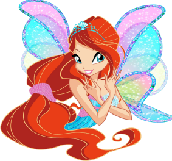

БЛУМ

Блум - веселая и дружелюбная девушка, которая глубоко заботится о тех, кто ее окружает, особенно о своей семье и друзьях. Хотя обычно у нее мягкий характер, она склонна смущаться и расстраиваться, когда что-то не так. Она серьезно изучает новые вещи, особенно свою новую личность феи, хотя вначале ее навыки были не очень развиты.
В начале первого сезона Блум было 16 лет. Наряды Блум в основном голубые, но на официальном сайте Winx Club ее любимый цвет - красный. Она любит читать книги о заклинаниях и играть со своим домашним кроликом Кико. Ее любимый предмет - зельеварение, а любимое заклинание - Пламя Дракона. В ее профиле на официальном сайте также указано, что ее любимое блюдо - пицца (ее мама также упоминает об этом в мультфильме), что ей нравятся романтические комедии и она любит поп-музыку. Она также ужасно аккуратна и временами может быть немного неорганизованной.